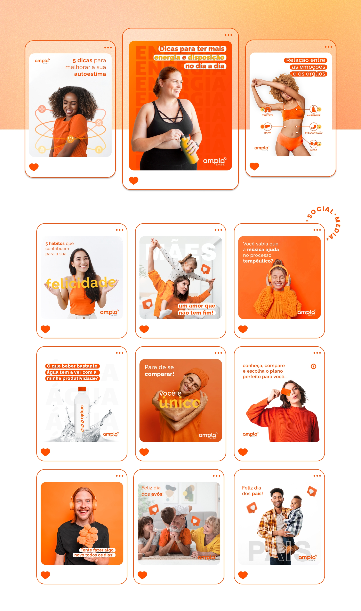

Ampla is a Brazilian health insurance company that caters specifically to young customers. In order to effectively communicate the brand’s core values of modernity, energy, and minimalism, I developed a series of social media posts that capture the essence of these concepts. My aim was to create content that resonates with the target audience and conveys the message that Ampla is a contemporary and dynamic health insurance provider that truly understands the needs of young people.
